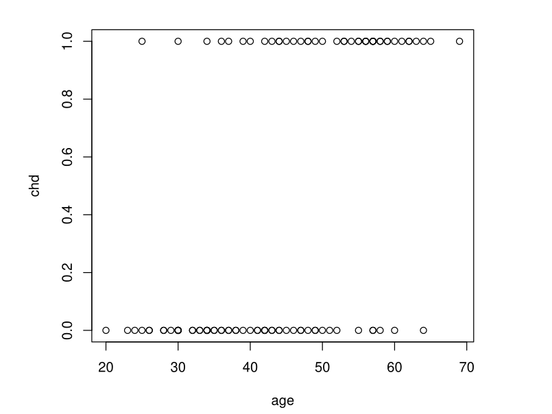
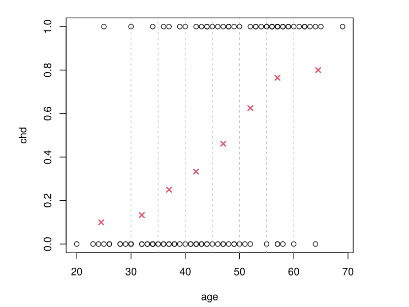
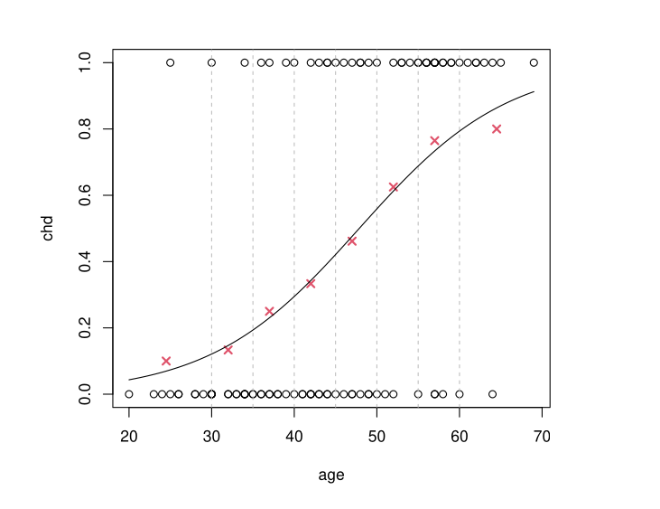
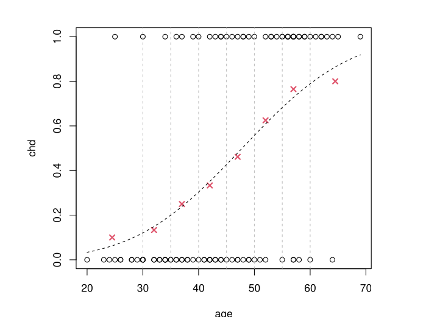
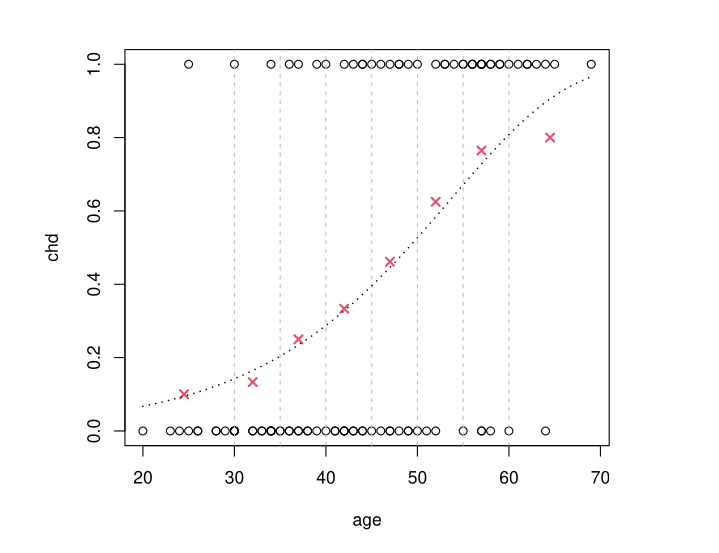
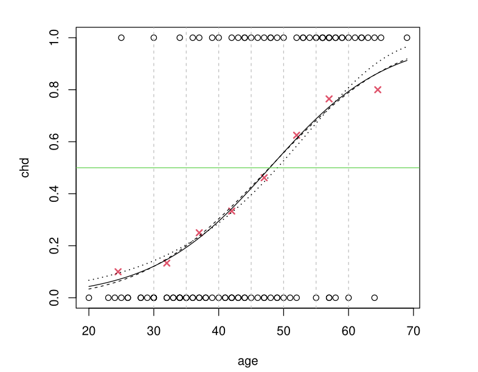
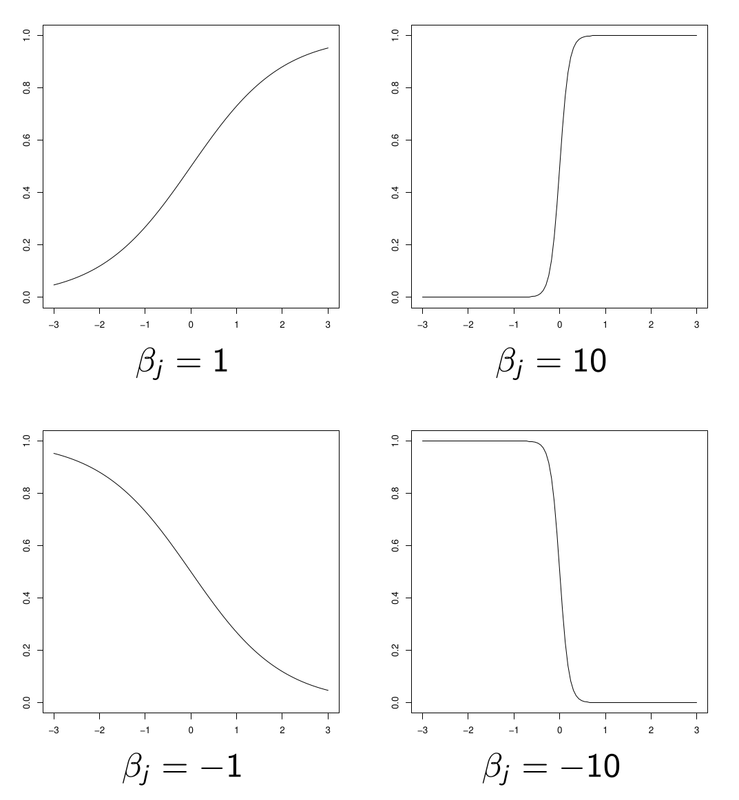
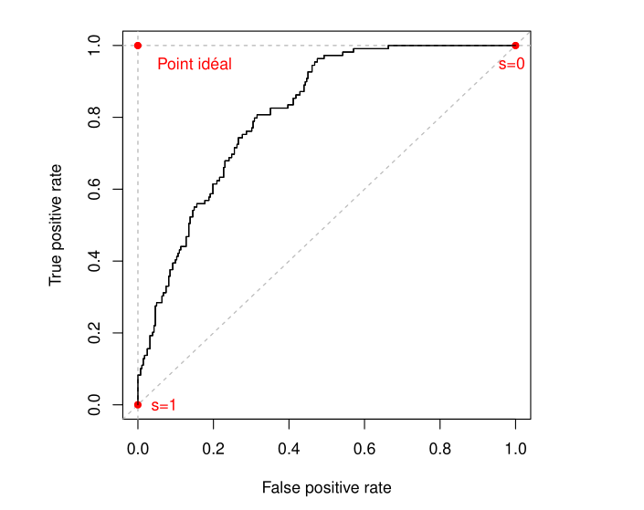

\(\newcommand{\VS}{\quad \mathrm{VS} \quad}\) \(\newcommand{\and}{\quad \mathrm{and} \quad}\) \(\newcommand{\E}{\mathbb E}\) \(\newcommand{\P}{\mathbb P}\) \(\newcommand{\Var}{\mathbb V}\) \(\newcommand{\Cov}{\mathrm{Cov}}\) \(\newcommand{\1}{\mathbf 1}\)
\(Y\) is a binary variable \(Y_k \in \{0,1\}\)
\(X = (X^{(1)}, \ldots, X^{(p)})\) are \(p\) regressors
\(Y|X = x\) follows a Bernoulli distribution with parameter \(p(x) = P(Y = 1|X = x)\). Model:
\[p(x) = g^{-1}(x^T\beta)\]
where \(g^{-1}\) is a strictly increasing function with values in \([0, 1]\)
Approach: We begin by discussing the choice of \(g^{-1}\) (or \(g\))
Data Description: Presence of chd as a function of age \(Y = \text{chd} \in \{0,1\}\), \(X = \text{age}\)
We want to estimate \(p(x) = \E(Y|X = x) = \P(\text{chd} = 1|X = x)\) for all \(x\)


Objective: We want to model \(p(x) = P(\text{chd} = 1|X = x)\) by: \[p(x) = g^{-1}(\beta_0 + \beta_1 x)\]
Constraint: We need \(g^{-1}\) to have values in \([0, 1]\)
\[g^{-1}(t) = \frac{e^t}{1 + e^t} \quad \text{i.e.} \quad g(t) = \ln\left(\frac{t}{1-t}\right) = \text{logit}(t)\]

Results of \(g^{-1}(\hat \beta_0 + \hat \beta_1 x)\) obtained by MLE
If \(\Phi\) is the CDF of a \(\mathcal{N}(0, 1)\) distribution, we take \(g^{-1}(t) = \Phi(t)\)

Results of \(g^{-1}(\hat \beta_0 + \hat \beta_1 x)\) obtained by MLE
\[g^{-1}(t) = 1 - e^{-e^t}\]

Results of \(g^{-1}(\hat \beta_0 + \hat \beta_1 x)\) obtained by MLE
logit and probit give approximately the same result cloglog differs slightly and is not “symmetric”

Question: Which link function to choose in practice when \(Y\) is binary?
Default choice: By default, we favor the logit model
Exceptions: Unless there is a good reason to choose something else (probit model, complementary log-log, or log-log)
Next steps: We return to the 3 usual choices to justify this preference
The probit model is justified when the binary variable \(Y|X = x\) comes from thresholding a Gaussian latent variable \(Z(x)\):
\[(Y|X = x) = \mathbf{1}_{Z(x) \geq \tau}\]
where \(Z(x) \sim \mathcal{N}(x^T\beta, \sigma^2)\)
If \(\Phi\) is the CDF of a \(\mathcal N(0,1)\) \[P(Y = 1|X = x) = P(Z(x) \geq \tau) = \Phi\left(\frac{x^T\beta - \tau}{\sigma}\right)\]
Econometricians: The probit model remains relatively popular among econometricians…
General trend: but it tends to be replaced by the logistic model
Advantages of logit: The logit model has many advantages that probit does not have:
Theoretical justification: CDF of probit close to CDF of logit
The modeling approach is \(p(x) = g^{-1}(x^T\beta)\) with
\[g(t) = \ln(-\ln(1-t)) \quad \text{i.e.} \quad g^{-1}(t) = 1 - e^{-e^t}\]
Not symmetric in the sense that \(g(t) \neq -g(1-t)\).
\(p(x)\) approaches \(0\) slowly but \(1\) very rapidly
If the opposite is true: take \(g(t) = -\ln(-\ln(t))\) (loglog model)
Useful in survival models (e.g. Cox)
Highly valued interpretation tool: odds-ratios.
More “practical” from a theoretical point of view.
Natural model in many situations.
We will show in exercises that:
If the two groups of individuals associated with \(Y = 0\) and \(Y = 1\) have a Gaussian distribution of \(X\) with different means, i.e. for \(m_0 \neq m_1\),
\(X|(Y = 0) \sim \mathcal N(m_0, \Sigma) \and X|(Y = 1) \sim \mathcal N(m_1, \Sigma)\)
then \(\mathbb P(Y = 1|X = x)\) follows a logistic model.
The previous result remains true for any distribution from the exponential family instead of \(\mathcal N\).
If \(Y\) is a binary variable, \((Y|X = x) \sim \mathcal B(p(x))\).
In a GLM model for \(Y\), we set \(p(x) = g^{-1}(x^T\beta)\) where \(g\) is:
by default the logit function, which is the most natural;
possibly probit if we have good reasons to justify it (but the results will be similar to logit);
cloglog (or loglog) if we have good reasons to justify it (strong asymmetry of \(p(x)\), connection with a Cox model).
In the following, we will focus on the logit model.
If \(x=(x^{(1)}, \dots, x^{(p)}) \in \mathbb R^{p \times 1}\)
\[p(x) = \text{logit}^{-1}(x^T\beta) = \frac{e^{x^T\beta}}{1 + e^{x^T\beta}}\]
\(x^{(j)} \to p(x)\) is increasing if \(\beta_j > 0\), decreasing otherwise.
The larger \(|\beta_j|\) is, the stronger the discriminatory power of regressor \(X^{(j)}\) (a small variation in \(x^{(j)}\) can cause a large variation in \(p(x)\)).

shape of \(x^{(j)} \to p(x)\)
For each of the 5300 patients, we observe:
We seek to model \(P(Y = 1|X)\) where \(X\) groups the previous variables (excluding \(Y\)).
| Variable | Estimate | Std. Error | z value | Pr(> | z |
|---|---|---|---|---|---|
| (Intercept) | -2.810240 | 0.294316 | -9.548 | < 2e-16 | *** |
| AGE | -0.004407 | 0.002717 | -1.622 | 0.105 | |
| DBP | 0.017581 | 0.003283 | 5.356 | 8.53e-08 | *** |
| SEXEFEMME | 0.544916 | 0.081261 | 6.706 | 2.00e-11 | *** |
| WALK1 | -0.409344 | 0.095972 | -4.265 | 2.00e-05 | *** |
| ACTIV1 | -0.789734 | 0.126653 | -6.235 | 4.51e-10 | *** |
| MARITAL2 | 0.070132 | 0.149638 | 0.469 | 0.639 | |
| MARITAL3 | -0.071318 | 0.127510 | -0.559 | 0.576 | |
| MARITAL4 | 0.188228 | 0.206598 | 0.911 | 0.362 | |
| MARITAL5 | 0.070613 | 0.115928 | 0.609 | 0.542 | |
| MARITAL6 | -0.150165 | 0.157687 | -0.952 | 0.341 |
The interpretation is similar to that of a linear regression model.
We want to remove the MARITAL variable from the model.
| Variable | Estimate | Std. Error | z value | Pr(> | z |
|---|---|---|---|---|---|
| (Intercept) | -3.9564361 | 0.3155529 | -12.538 | < 2e-16 | *** |
| AGE | 0.0640837 | 0.0123960 | 5.170 | 2.34e-07 | *** |
| I(AGE^2) | -0.0006758 | 0.0001260 | -5.364 | 8.14e-08 | *** |
| DBP | 0.0121546 | 0.0033775 | 3.599 | 0.00032 | *** |
| SEXEFEMME | 0.5155651 | 0.0776229 | 6.642 | 3.10e-11 | *** |
| WALK1 | -0.4042257 | 0.0913195 | -4.426 | 9.58e-06 | *** |
| ACTIV1 | -0.6573558 | 0.1150226 | -5.715 | 1.10e-08 | *** |
For someone for which WALK1=0 and ACTIV1=0:
\(P(Y = 1|\text{AGE}, \text{DBP}) = \text{logit}^{-1}(-3.95 + 0.064 \times \text{AGE} - 0.00068 \times \text{AGE}^2 + 0.0122 \times \text{DBP})\)
For someone for which WALK1=0 and ACTIV1=1:
\(P(Y = 1|\text{AGE}, \text{DBP}) = \text{logit}^{-1}(-3.95 + 0.064 \times \text{AGE} - 0.00068 \times \text{AGE}^2 + 0.0122 \times \text{DBP} \color{red}{ - 0.657})\)
\[\text{odds} = \frac{p}{1-p}\]
Betting interpretation for example, \(3\) to \(1\) means that for \(3\) people betting on \(A\), \(1\) person bets on \(B\).
So a randomly chosen bettor has a probability of \(p=3/4\) of betting on \(A\) and \(1-p=1/4\) on betting on \(B\)
Similarly, the odds of obtaining \(Y = 1\) given \(X = x\) is:
\[\text{odds}(x) = \frac{p(x)}{1 - p(x)}\]
where \(p(x) = P(Y = 1|X = x)\).
If two individuals have characteristics \(x_1\) and \(x_2\) respectively, we call the odds ratio between \(x_1\) and \(x_2\):
\[OR(x_1, x_2) = \frac{\text{odds}(x_1)}{\text{odds}(x_2)} = \frac{\frac{p(x_1)}{1-p(x_1)}}{\frac{p(x_2)}{1-p(x_2)}}\]
Warning
DO NOT CONFUSE ODDS RATIO WITH PROBABILITY RATIO
Only possible exception: if \(p(x_1)\) and \(p(x_2)\) are very small because then \(1 - p(x_1) \approx 1\) and \(1 - p(x_2) \approx 1\), so that \(OR(x_1, x_2) \approx p(x_1)/p(x_2)\)
However, it remains that:
\[\begin{aligned} OR(x_1, x_2) > 1 &\Leftrightarrow \frac{p(x_1)}{p(x_2)} > 1\\ OR(x_1, x_2) < 1 &\Leftrightarrow \frac{p(x_1)}{p(x_2)} < 1\\ OR(x_1, x_2) = 1 &\Leftrightarrow \frac{p(x_1)}{p(x_2)} = 1 \end{aligned}\]
\(OR(x_1, x_2)\) accentuates the differences compared to \(p(x_1)/p(x_2)\):
\[\begin{aligned} OR(x_1, x_2) > \frac{p(x_1)}{p(x_2)} &\text{ when } OR(x_1, x_2) > 1\\ OR(x_1, x_2) < \frac{p(x_1)}{p(x_2)} &\text{ when } OR(x_1, x_2) < 1 \end{aligned}\]
A logistic regression is most often used to compare the behavior of two individuals with respect to the variable of interest.
Examples:
It holds that \(\text{odds}(x) = \frac{p(x)}{1 - p(x)} = \exp(x^T \beta)\)
Hence,
\(OR(x_1, x_2) = \frac{\text{odds}(x_1)}{\text{odds}(x_2)} = \exp((x_1 - x_2)^T \beta)\)
If the two individuals differ only by regressor \(j\), then
\(OR(x_1, x_2) = \exp(\beta_j (x_1^{(j)} - x_2^{(j)}))\)
If regressor \(j\) is binary (\(x_1^{(j)} = 1\) while \(x_2^{(j)} = 0\)):
\(OR(x_1, x_2) = \exp(\beta_j)\)
In a logistic regression model, \(\beta_j\) is interpreted as the logarithm of the odds-ratio between two individuals differing by a quantity of \(1\) on regressor \(j\), all else being equal.
In brief: \(\exp(\beta_j) = OR(x^{(j)} + 1, x^{(j)})\)
If regressor \(j\) is binary (absence or presence of a certain characteristic):
\(\exp(\beta_j)\) is simply the OR between the presence or absence of this characteristic, all else being equal.
| Variable | Estimate | Std. Error | z value | Pr(> | z |
|---|---|---|---|---|---|
| (Intercept) | -3.9564361 | 0.3155529 | -12.538 | < 2e-16 | *** |
| AGE | 0.0640837 | 0.0123960 | 5.170 | 2.34e-07 | *** |
| I(AGE^2) | -0.0006758 | 0.0001260 | -5.364 | 8.14e-08 | *** |
| DBP | 0.0121546 | 0.0033775 | 3.599 | 0.00032 | *** |
| SEXEFEMME | 0.5155651 | 0.0776229 | 6.642 | 3.10e-11 | *** |
| WALK1 | -0.4042257 | 0.0913195 | -4.426 | 9.58e-06 | *** |
| ACTIV1 | -0.6573558 | 0.1150226 | -5.715 | 1.10e-08 | *** |
The Odds Ratio corresponding to practicing or not practicing intense sports activity is, all else being equal:
\(\exp(-0.657) \approx 0.52\)
The odds of obesity occurrence therefore decrease by half for individuals practicing intense sports activity.
(The odds, not the probability!)
| Variable | Estimate | Std. Error | z value | Pr(> | z |
|---|---|---|---|---|---|
| (Intercept) | -3.9564361 | 0.3155529 | -12.538 | < 2e-16 | *** |
| AGE | 0.0640837 | 0.0123960 | 5.170 | 2.34e-07 | *** |
| I(AGE^2) | -0.0006758 | 0.0001260 | -5.364 | 8.14e-08 | *** |
| DBP | 0.0121546 | 0.0033775 | 3.599 | 0.00032 | *** |
| SEXEFEMME | 0.5155651 | 0.0776229 | 6.642 | 3.10e-11 | *** |
| WALK1 | -0.4042257 | 0.0913195 | -4.426 | 9.58e-06 | *** |
| ACTIV1 | -0.6573558 | 0.1150226 | -5.715 | 1.10e-08 | *** |
The OR for a diastolic pressure difference of \(+20\) is:
\(\exp(0.0121546 \times 20) \approx 1.28\)
The odds of obesity occurrence therefore increase by \(28\%\).
We observe \(n\) i.i.d. realizations \((Y_i, X_i)\) where \(Y_i \in \{0, 1\}\) and \(X_i \in \mathbb{R}^p\).
We denote \(p(x_i) = P(Y_i = 1|X_i = x_i)\).
We assume the logistic model: for all \(i\),
\[p(x_i) = \text{logit}^{-1}(x_i^T \beta) = \frac{e^{x_i^T \beta}}{1 + e^{x_i^T \beta}}\]
where \(\beta = (\beta_1, \ldots, \beta_p)^T\) and \(x_i^T \beta = \beta_1 x_i^{(1)} + \cdots + \beta_p x_i^{(p)}\).
\[p(x_i) = \text{logit}^{-1}(x_i^T \beta) = \frac{e^{x_i^T \beta}}{1 + e^{x_i^T \beta}}\]
We will estimate \(\beta\) by maximizing the likelihood.
We will denote \(p_\beta(x_i)\) to emphasize the dependence of \(p(x_i)\) on \(\beta\).
For all \(i\), \(Y_i|(X_i = x_i)\) follows the distribution \(B(p_\beta(x_i))\). Therefore
\[P(Y_i = y_i|X_i = x_i) = p_\beta(x_i)^{y_i}(1 - p_\beta(x_i))^{1-y_i}\]
for all \(y_i \in \{0, 1\}\).
By independence, we obtain the likelihood
\[\ell(\beta, y_1, \ldots, y_n, x_1, \ldots, x_n) = \prod_{i=1}^n p_\beta(x_i)^{y_i}(1 - p_\beta(x_i))^{1-y_i}\]
Taking the log and replacing \(p(x_i)\) by its expression, we obtain the log-likelihood:
\[\begin{aligned} L(\beta, y_1, \ldots, y_n, x_1, \ldots, x_n) &= \ln(\ell) \\ &=\sum_{i=1}^n \left[y_i x_i^T \beta - \ln(1 + e^{x_i^T \beta})\right] \end{aligned}\]
The MLE \(\hat{\beta}\), if it exists, cancels the gradient of \(L\) with respect to \(\beta\). This gradient equals
\[\frac{\partial L}{\partial \beta} = \sum_{i=1}^n x_i \left(y_i - \frac{e^{x_i^T \beta}}{1 + e^{x_i^T \beta}}\right)\]
We therefore need to solve a system of \(p\) equations with \(p\) unknowns.
But the solution is not explicit: we resort to numerical methods (Newto-Raphso algo)
This is a classic situation when using advanced statistical models: we often resort to optimization algorithms.
Does the solution exist? Is it unique?
Let \(X\) be the design matrix \((X^{(1)}, \dots, X^{(p)}) \in \mathbb R^{n \times p}\)
Proposition
If \(\text{rank}(X) = p\), then the MLE, if it exists, is unique.
It suffices to show that \(L\) is strictly concave in \(\beta\).
Hessian Matrix of \(L\):
\[\frac{\partial^2 L}{\partial \beta^2} = -\sum_{i=1}^n p_\beta(x_i)(1 - p_\beta(x_i)) x_i x_i^T\]
It is negative semi-definite. Moreover, for all \(u \in \mathbb{R}^p\),
\[\begin{aligned} u^T \frac{\partial^2 L}{\partial \beta^2} u = 0 &\Leftrightarrow u^T x_i x_i^T u = 0 \text{ for all } i\\ &\Leftrightarrow u^T x_i = 0 \text{ for all } i\\ &\Leftrightarrow Xu = 0\\ &\Leftrightarrow u = 0 \end{aligned}\]
since \(\text{rank}(X) = p\).
Thus, for all \(u \neq 0\),
\[u^T \frac{\partial^2 L}{\partial \beta^2} u < 0\]
The Hessian matrix is negative definite and therefore \(L\) is strictly concave,
The MLE is unique
Although \(L\) is strictly concave, its maximum can occur at infinity (think of the \(\ln\) function), in which case \(\hat{\beta}\) does not exist.
This occurs if there is non-overlap, i.e., separation by a hyperplane of the \(x_i\) for which \(y_i = 0\) and those for which \(y_i = 1\).
Mathematically, there is non-overlap if there exists \(\alpha \in \mathbb{R}^p\) such that
\[\begin{cases} \text{for all } i \text{ such that } y_i = 0, & \alpha^T x_i \geq 0 \\ \text{for all } i \text{ such that } y_i = 1, & \alpha^T x_i \leq 0 \end{cases}\]
Proposition (admitted)
In case of non-overlap, the estimator \(\hat{\beta}\) does not exist, in the sense that \(L(\beta)\) is maximal when \(\|\beta\| \to \infty\) (in one or several directions).
For all \(x\), \(\hat{p}(x) = \in \{0,1\}\), depending on the position of \(x\) relative to the separating hyperplane.
Nevertheless, there is a “dead zone” in the middle of the \(2\) point clouds, because the separating hyperplane is not necessarily unique.
Beyond this dead zone, classification is very simple (\(0\) or \(1\)).
But no interpretation of the model is possible (the OR are worth \(0\) or \(+\infty\)).
We say there is overlap when no hyperplane can separate the red points from the blue points.
Proposition (admitted)
If \(\text{rank}(X) = p\) and there is overlap, then the MLE exists and is unique.
Under these conditions, we can therefore search for the MLE using the Newton-Raphson algorithm.
the maximum exists,
the function to optimize is strictly concave and there is therefore no local maximum, only a global maximum.
Let \(X\) be the design matrix (whose rows are the vectors \(x_i\)).
Let \(J_n(\beta)\) be the Fisher information matrix:
\[J_n(\beta) = -E\left[\frac{\partial^2 L}{\partial \beta^2}(\beta) \right]\]
Proposition (admitted)
In the logistic regression model, if
then
the maximum likelihood estimator \(\hat{\beta}\) is consistent;
\(J_n(\beta)^{1/2}(\hat{\beta} - \beta) \xrightarrow{L} N(0, I_p)\)
where \(I_p\) is the identity matrix of size \(p\).
The formula for \(\hat{\beta}\) is explicit: \(\hat{\beta} = (X^T X)^{-1} X^T Y\);
Its expectation and variance are explicit;
In the Gaussian model (\(Y|X\) Gaussian), the distribution of \(\hat{\beta}\) is explicit, which allows constructing exact tests (Student, Fisher).
If the model is not Gaussian, these tests are valid asymptotically.
No explicit formula for \(\hat{\beta}\), the solution is obtained numerically;
We know neither the bias nor the variance of \(\hat{\beta}\);
The distribution of \(Y|X\) is simple (a Bernoulli), but we don’t know the distribution of \(\hat{\beta}\).
We only know its asymptotic distribution.
We’ll do asymptotic tests!
Under “good conditions”,
\[J_n(\beta)^{1/2}(\hat{\beta} - \beta) \xrightarrow{L} N(0, I_p)\]
where \(J_n(\beta)\) is the Fisher information matrix.
To build asymptotic tests, we need to understand \(J_n(\beta)\) and be able to estimate it.
\[J_n(\beta) = -E\left[\frac{\partial^2 L}{\partial \beta^2}(\beta) \bigg| X\right]\]
where \(L\) is the log-likelihood of the model.
From the proof of existence of MLE,
\[J_n(\beta) = \sum_{i=1}^n p_\beta(x_i)(1 - p_\beta(x_i)) x_i x_i^T\]
We can write equivalently
\[J_n(\beta) = X^T W_\beta X\]
where \(X\) is the design matrix and \(W_\beta\) is the diagonal matrix
\[W_\beta = \begin{pmatrix} p_\beta(x_1)(1 - p_\beta(x_1)) & 0 & \cdots & 0 \\ 0 & p_\beta(x_2)(1 - p_\beta(x_2)) & \cdots & 0 \\ \vdots & \vdots & \ddots & \vdots \\ 0 & 0 & \cdots & p_\beta(x_n)(1 - p_\beta(x_n)) \end{pmatrix}\]
To estimate \(J_n(\beta)\), we simply replace \(\beta\) by the MLE \(\hat{\beta}\)
Under the same regularity assumptions, we can show that
\[J_n(\hat{\beta})^{1/2}(\hat{\beta} - \beta) \xrightarrow{L} N(0, I_p)\]
\[J_n(\hat{\beta})^{1/2}(\hat{\beta} - \beta) \xrightarrow{L} N(0, I_p)\]
Denoting \(\hat{\sigma}_j^2\) the \(j\)-th diagonal element of \(J_n(\hat{\beta})^{-1}\), we obtain (admitted):
\[\frac{\hat{\beta}_j - \beta_j}{\hat{\sigma}_j} \xrightarrow{L} N(0, 1)\]
We deduce a confidence interval for \(\beta_j\), at asymptotic confidence level \(1 - \alpha\):
\[\text{CI}_{1-\alpha}(\beta_j) = \left[\hat{\beta}_j - q_{1-\alpha/2}\hat{\sigma}_j \,;\, \hat{\beta}_j + q_{1-\alpha/2}\hat{\sigma}_j\right]\]
where \(q(1 - \alpha/2)\) is the quantile of order \(1 - \alpha/2\) of the \(N(0, 1)\) distribution.
We verify that we have \(\P(\beta_j \in \text{CI}_{1-\alpha}(\beta_j)) \to 1 - \alpha\).
We want to test \(H_0: \beta_j = 0\) against \(H_1: \beta_j \neq 0\).
Under \(H_0\) we know that \(\frac{\hat{\beta}_j}{\hat{\sigma}_j} \xrightarrow{L} N(0, 1)\)
We deduce a critical region at asymptotic level \(\alpha\):
\[\mathcal R_\alpha = \left\{\frac{|\hat{\beta}_j|}{\hat{\sigma}_j} > q_{1-\alpha/2}\right\}\]
Indeed \(P_{H_0}(\mathcal R_\alpha) \to \alpha\).
This test is called the Wald test. (As any other test that relies on asymptotic normality)
Denoting \(\Phi\) the cdf of the \(\mathcal N(0, 1)\) distribution, the p-value of the test equals
\[p\text{-value} = 2\left(1 - \Phi\left(\frac{|\hat{\beta}_j|}{\hat{\sigma}_j}\right)\right)\]
| Variable | Estimate | Std. Error | z value | Pr(> | z |
|---|---|---|---|---|---|
| (Intercept) | -3.9564361 | 0.3155529 | -12.538 | < 2e-16 | *** |
| AGE | 0.0640837 | 0.0123960 | 5.170 | 2.34e-07 | *** |
| I(AGE^2) | -0.0006758 | 0.0001260 | -5.364 | 8.14e-08 | *** |
| DBP | 0.0121546 | 0.0033775 | 3.599 | 0.00032 | *** |
| SEXEFEMME | 0.5155651 | 0.0776229 | 6.642 | 3.10e-11 | *** |
| WALK1 | -0.4042257 | 0.0913195 | -4.426 | 9.58e-06 | *** |
| ACTIV1 | -0.6573558 | 0.1150226 | -5.715 | 1.10e-08 | *** |
Each columns corresponds resp. to
We consider two individuals \(1\) and \(2\) who differ only by their regressor \(j\). Then,
\[OR(x_1^{(j)}, x_2^{(j)}) = e^{\beta_j(x_1^{(j)} - x_2^{(j)})}\]
Do we have \(OR(x_1^{(j)}, x_2^{(j)})\approx 1\)?
The estimation of \(OR(x_1^{(j)}, x_2^{(j)})\) is simply
\[\widehat{OR}(x_1^{(j)}, x_2^{(j)}) = e^{\hat{\beta}_j(x_1^{(j)} - x_2^{(j)})}\]
If regressor \(j\) is binary with \(x_1^{(j)} = 1\) and \(x_2^{(j)} = 0\), then
\[\widehat{OR}(x_1^{(j)}, x_2^{(j)}) = e^{\hat{\beta}_j}\]
We have seen that an asymptotic CI at confidence level \(1 - \alpha\) for \({\beta}_j\) is
\[\text{CI}_{1-\alpha}(\beta_j) = \left[\hat{\beta}_j - q_{1-\alpha/2}\hat{\sigma}_j \,;\, \hat{\beta}_j + q_{1-\alpha/2}\hat{\sigma}_j\right]= [l,r]\]
If \(x_1^{(j)} > x_2^{(j)}\), an asymptotic CI for \(OR(x_1^{(j)}, x_2^{(j)})= e^{\beta_j(x^{(j)}_1 - x^{(j)}_2)}\) at level \(1 - \alpha\) is
\[\text{CI}_{1-\alpha}(OR(x_1^{(j)}, x_2^{(j)})) = \left[e^{l(x_1^{(j)} - x_2^{(j)})}, e^{r(x_1^{(j)} - x_2^{(j)})}\right]\]
We generally want to compare \(OR(x_1^{(j)}, x_2^{(j)})\) to \(1\).
\[OR(x_1^{(j)}, x_2^{(j)}) = 1 \Leftrightarrow e^{\beta_j(x_1^{(j)} - x_2^{(j)})} = 1 \Leftrightarrow \beta_j = 0\]
\(H_0: OR(x_1^{(j)}, x_2^{(j)}) = 1\) VS \(H_1: OR(x_1^{(j)}, x_2^{(j)}) \neq 1\)
amounts to testing \(H_0: \beta_j = 0\) against \(H_1: \beta_j \neq 0\). The Rejection region at level \(\alpha\) is
\[\mathcal R_\alpha = \left\{\frac{|\hat{\beta}_j|}{\hat{\sigma}_j} > q_{1-\alpha/2}\right\}\]
Nevertheless, for ORs, we often prefer one-sided tests.
\(H_0: OR(x_1^{(j)}, x_2^{(j)}) = 1\) VS \(H_1: OR(x_1^{(j)}, x_2^{(j)}) > 1\)
If \(x_1^{(j)} > x_2^{(j)}\). Since \(OR(x_1^{(j)}, x_2^{(j)}) \geq 1 \Leftrightarrow \beta_j \geq 0\) rejection region at level \(\alpha\) is
\[\mathcal R_{\alpha}=\left\{\frac{\hat{\beta}_j}{\hat{\sigma}_j} > q_{1-\alpha}\right\}\]
Suppose we have \(n\) observations \((Y_1, \dots, Y_n)\) and \((X_1, \dots, X_n)\) (categorical)
Here \(X_k\) can represent the vector \(X_k = (X^{(1)}_k, \dots, X^{(p)}_k)^T\).
Assume that indivudal are iid, with \(\mathbb P(Y=1|X_k=x) = p(x)\).
How do we estimate \(p(x)\)?
Suppose we have \(n\) observations \((Y_1, \dots, Y_n)\) and \((X_1, \dots, X_n)\)
\(n(x) = |\{k:~ X_k = x\}|\) (number of indiv. \(k\) s.t. \(X_k=x\))
\(n_1(x) = |\{k:~ X_k = x ~~\text{and}~~Y_k=1\}|\)
The saturated model is one that estimates \(p(x)\), for an observed \(x\), by
\[\hat{p}_{\text{sat}}(x) = \frac{n_1(x)}{n(x)}\]
\[\hat{p}_{\text{sat}}(x) = \frac{n_1(x)}{n(x)}\]
If all observations are distinct, i.e., each observed \(x\) is only for a single individual, then for an observed \(x\):
\(n(x) = 1\), \(n_1(x) \in \{0,1\}\), and \(\hat{p}_{\text{sat}}(x) = 0\) or \(1\).
The saturated model is the simplest model to imagine.
It fits the data perfectly.
However, it has no explanatory power (effect of regressors on \(Y\)?).
And it says nothing about \(p(x)\) if \(x\) is not observed.
It will serves as a reference for fit
For the saturated model with probabilities \(p(x)\), the Log-likelihood is:
\[L(y_1, \ldots, y_n|x_1, \ldots, x_n) = \sum_{i=1}^n y_i \ln(p(x_i)) + (1 - y_i) \ln(1 - p(x_i))\]
The saturated model minimizes this likelihood, and we denote
\[L_{\text{sat}} = \sum_{i=1}^n y_i \ln(\hat p_{\text{sat}}(x_i)) + (1 - y_i) \ln(1 - \hat p_{\text{sat}}(x_i))\]
If all observations \(x_i\) are distinct, we have \(\hat{p}_{\text{sat}}(x_i) = y_i\) with \(y_i \in \{0, 1\}\). We thus have
\[L_{\text{sat}} = 0\]
The saturated estimator has highest possible log-likelihood: it fits the data perfectly (too well).
If the observations \(x_i\) are not distinct, we obtain
\[L_{\text{sat}} = \sum_x \left[n_1(x) \ln\left(\frac{n_1(x)}{n(x)}\right) + (n(x) - n_1(x)) \ln\left(1 - \frac{n_1(x)}{n(x)}\right)\right]\]
where the sum runs over the set of values \(x\) taken by the \(x_i\).
The deviance of a model measures how much this model deviates from the saturated model (the ideal model in terms of likelihood).
\[D = 2(L_{\text{sat}} - L_{\text{mod}})\]
where \(L_{\text{mod}}\) denotes the log-likelihood for the model parameters.
We always have \(D \geq 0\).
If all observations are distinct, \(L_{\text{sat}} = 0\) therefore \(D = -2L_{\text{mod}}\)
\[D = 2(L_{\text{sat}} - L_{\text{mod}})\]
Deviance plays the role of the SSR of a linear model: the higher the deviance, the less well the model is fitted to the data.
In R, The returned deviance is \(-2L_{\text{mod}}\): the term \(L_{\text{sat}}\) is therefore omitted.
As in linear regression, we would like to test \(H_0: R\beta = 0\) VS \(H_1: R\beta \neq 0\)
where \(R\) is a constraint matrix of size \((q, p)\) of full rank.
For recall, depending on the choice of \(R\) this allows:
testing the minimum: is there at least one relevant regressor?
comparing nested models
examining the collective significance of a family of regressors
In GLM, several test procedures address the problem.
The Wald test, based on the asymptotic normality of \(\hat{\beta}\), which generalizes the one seen for testing \(\beta_j = 0\) against \(\beta_j \neq 0\).
The likelihood ratio test, called in this context the deviance test.
The score test, based on the behavior of the gradient of the log-likelihood at the critical point.
The most used is the deviance test.
To test \(H_0: R\beta = 0\) against \(H_1: R\beta \neq 0\), the principle of the test is as follows:
We calculate the MLE in each model to obtain \(\hat{\beta}\) in the complete model and \(\hat{\beta}_{H_0}\) in the constrained model.
Logic: If \(H_0\) is true, the constrained model should be as “likely” as the complete model, so \(L(\hat{\beta})\) and \(L(\hat{\beta}_{H_0})\) should be similar.
The test statistic is the difference of deviances:
\[D_{H_0} - D_{H_1} = 2\left(L(\hat{\beta}) - L(\hat{\beta}_{H_0})\right)\]
Under \(H_0\), denoting \(q\) the number of constraints, we have the convergence (admitted):
\[D_{H_0} - D_{H_1} = 2\left(L(\hat{\beta}) - L(\hat{\beta}_{H_0})\right) \xrightarrow{L} \chi^2_q\]
The asymp. rejection region at asymptotic level \(\alpha\) is therefore
\[\mathcal R_\alpha = \{D_{H_0} - D_{H_1} > \chi^2_{q,1-\alpha}\}\]
where \(\chi^2_{q,1-\alpha}\): quantile \(1 - \alpha\) of a \(\chi^2_q\) distribution.
The p-value equals
\[p\text{-value} = 1 - F(D_{H_0} - D_{H_1})\]
where \(F\) is the cdf of a \(\chi^2_q\) distribution.
We want to test if a model (having a constant) is significant
We therefore test \(H_0\): all its coefficients are zero except the constant. This corresponds to the special case
\(R = [0 | I_{p-1}]\).
We compare the deviance of the model to the null deviance \(D_0\), corresponding to a model that contains only the constant.
The test statistic is \(D_0 - D\). Under \(H_0\), when \(n \to \infty\):
\[D_0 - D \sim \chi^2_{p-1}\]
The model is therefore significant (relative to the null model) if the sample is in the critical region of asymptotic level \(\alpha\):
\[\mathcal R_\alpha = \{D_0 - D > \chi^2_{p-1,1-\alpha/2}\}\]
Suppose that model \(1\) (with deviance \(D_1\)) is a sub-model of model \(2\) (with deviance \(D_2\))
Model \(1\) is therefore obtained from model \(2\), with parameter \(\beta\), via a constraint of the type \(R\beta = 0\) where \(R\) is a \((q, p)\) matrix.
Under \(H_0: R\beta = 0\), we have asymptotically \(D_1 - D_2 \sim \chi^2_q\)
Hence the asymptotic test: .
\(\mathcal R_\alpha = \{D_1 - D_2 > \chi^2_{q,1 - \alpha}\}\)
The AIC and BIC criteria are defined similarly to linear regression, i.e.
\(\text{AIC} = -2L_{\text{mod}} + 2p\)
\(\text{BIC} = -2L_{\text{mod}} + \ln(n)p\)
where \(L_{\text{mod}}\) is the log-likelihood of the estimated model.
If we ignore saturated likelihood and set \(L_{\text{sat}}=0\),
\(\text{AIC} = D + 2p\)
\(\text{BIC} = D + \ln(n)p\)
In practice, we choose the model having the minimal AIC or BIC
As in linear regression, we can use automatic selection procedures (backward, forward, etc).
| Statistic | Value | Degrees of Freedom |
|---|---|---|
| Null deviance | \(4610.8\) | on \(5300\) |
| Residual deviance | \(4459.5\) | on \(5290\) |
| AIC | \(4481.5\) |
The model deviance is therefore \(D = 4459.5\).
Significance Test: We compare \(D\) to the null deviance \(D_0 = 4610.8\): \(D_0 - D = 151.3\). The p-value of the test equals \(1 - \chi^2_{10}(151.3) \approx 0\) where \(\chi^2_{10}\) is the cdf of a \(\chi^2_{10}\).
The model is significant.
| Statistic | Value | Degrees of Freedom |
|---|---|---|
| Null deviance | \(4610.8\) | on \(5300\) |
| Residual deviance | \(4462.7\) | on \(5295\) |
| AIC | \(4474.7\) |
The deviance is now \(D_2 = 4462.7\). To compare with the previous model, we calculate: \(D_2 - D = 3.2\).
The p-value of the test equals \(1 - F_5(3.2) \approx 0.67\), where \(F_5\): cdf of a \(\chi^2_5\).
We therefore accept \(H_0\): the coefficients related to MARITAL are zero. (Also confirmed with AIC)
| Statistic | Value | Degrees of Freedom |
|---|---|---|
| Null deviance | \(4610.8\) | on \(5300\) |
| Residual deviance | \(4439.5\) | on \(5294\) |
| AIC | \(4453.5\) |
The deviance test with the previous model has p-value \(1 - F_1(4462.7 - 4439.5) = 1 - F_1(23.2) \approx 10^{-6}\)
This model is therefore preferable, (confirmed with AIC).
However, we cannot compare this model with the first one by deviance test because they are not nested.
We can however compare their AIC: this model is preferable.
Suppose we are interested in a new individual for whom
We want to predict \(Y\) for this new individual.
If we have fitted a logistic regression model, we can estimate
\[p_\beta(x) = P(Y = 1|X = x)\]
by
\[p_{\hat{\beta}}(x) = \text{logit}^{-1}(x^T \hat{\beta}) = \frac{e^{x^T \hat{\beta}}}{1 + e^{x^T \hat{\beta}}}\]
\[p_\beta(x) = P(Y = 1|X = x)\]
We will see:
how to construct a confidence interval around the estimation \(p_{\hat{\beta}}(x)\);
how to exploit this estimation to classify the new individual in category \(Y = 0\) or \(Y = 1\).
We know that when \(n \to \infty\):
\[\hat{\beta} \sim N(\beta, (X^T W_{\hat{\beta}} X)^{-1})\]
We deduce that when \(n \to +\infty\), \(x^T \hat{\beta} \sim N(x^T \beta, x^T (X^T W_{\hat{\beta}} X)^{-1} x)\), and the asymptotic CI of \(x^T\beta\):
\[\text{CI}_{1-\alpha}(x^T \beta) = \left[x^T \hat{\beta} \pm q_{1-\alpha/2} \sqrt{x^T (X^T W_{\hat{\beta}} X)^{-1} x}\right]\]
Since \(p_{\hat{\beta}}(x) = \text{logit}^{-1}(x^T \hat{\beta})\), we have therefore by application of the increasing function \(\text{logit}^{-1}\), the CI at asymptotic level \(1 - \alpha\):
\[\text{CI}_{1-\alpha}(p_\beta(x)) = \left[\text{logit}^{-1}\left(x^T \hat{\beta} \pm q_{1-\alpha/2} \sqrt{x^T (X^T W_{\hat{\beta}} X)^{-1} x}\right)\right]\]
We have estimated \(p_\beta(x) = P(Y = 1|X = x)\) by \(p_{\hat{\beta}}(x)\).
For a threshold to choose \(s \in [0, 1]\), we use the rule:
\[\begin{cases} \text{if } p_{\hat{\beta}}(x) > s, & \hat{Y} = 1 \\ \text{if } p_{\hat{\beta}}(x) < s, & \hat{Y} = 0 \end{cases}\]
The “natural” choice of threshold is \(s = 0.5\) but this choice can be optimized.
We proceed by cross-validation:
Using a train sample, predict \(Y\) on a test sample and form the confusion matrix.
| \(Y = 0\) | \(Y = 1\) | |
|---|---|---|
| \(\hat{Y} = 0\) | TN | FN |
| \(\hat{Y} = 1\) | FP | TP |
Reading: T: true, F:False, N: Negative, P: Positive.
FP: false positives: number of individuals who were classified positive who were actually negative
The ideal is to have a confusion matrix that is as diagonal as possible.
We generally seek to maximize the following indicators:
The sensitivity (or recall, or true positive rate) estimates \(\P(\hat{Y} = 1|Y = 1)\) by
\[\frac{\text{TP}}{\text{TP} + \text{FN}}\]
The specificity (or selectivity, or true negative rate) estimates \(\P(\hat{Y} = 0|Y = 0)\)
\[\frac{\text{TN}}{\text{TN} + \text{FP}}\]
The precision (or positive predictive value) estimates \(\P(Y = 1|\hat{Y} = 1)\) by
\(\frac{\text{TP}}{\text{TP} + \text{FP}}\)
The \(F\)-score is the harmonic mean between sensitivity and precision:
\[F_1 = 2 \frac{\text{precision} \times \text{sensitivity}}{\text{precision} + \text{sensitivity}}\]
For each threshold \(s\), from a test sample:
We finally choose the optimal threshold \(s\), according to the chosen score.
\(\hat Y=1\) (treatment) while the patient is not ill (\(Y = 0\))
\(\hat Y=0\) (no treatment) while the patient has a serious illness (\(Y=1\))
We can also plot the ROC curve (TP rate as a function of FP rate for \(s \in [0, 1]\)):
\(ROC:~~\mathrm{sensitiv.} = \frac{TP}{TP+FN} = F\left(\frac{FP}{FP+TN}\right) = F(1-\mathrm{specific.})\)
The AUC (area under the curve) is a quality indicator of the model (\(0 \leq \text{AUC} \leq 1\)).
Or equivalently, the Gini index: \(2 \times \text{AUC} - 1\).
Use: compare \(2\) models by plotting the 2 ROC curves.

Comments
Under these conditions, the MLE therefore exists for sufficiently large \(n\). In fact, there is necessarily overlap when \(n\) is large.
It is asymptotically efficient (= minimal asymptotic variance)
The Fisher information matrix \(J_n(\beta)\) can be calculated
We will be able to rely on asymptotic normality to perform tests and construct confidence intervals